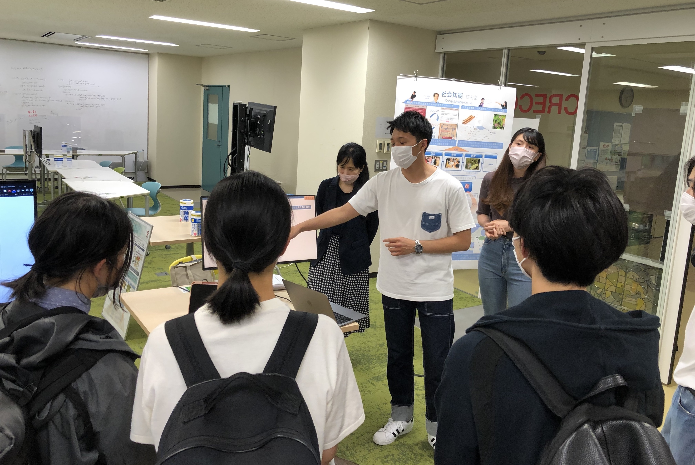
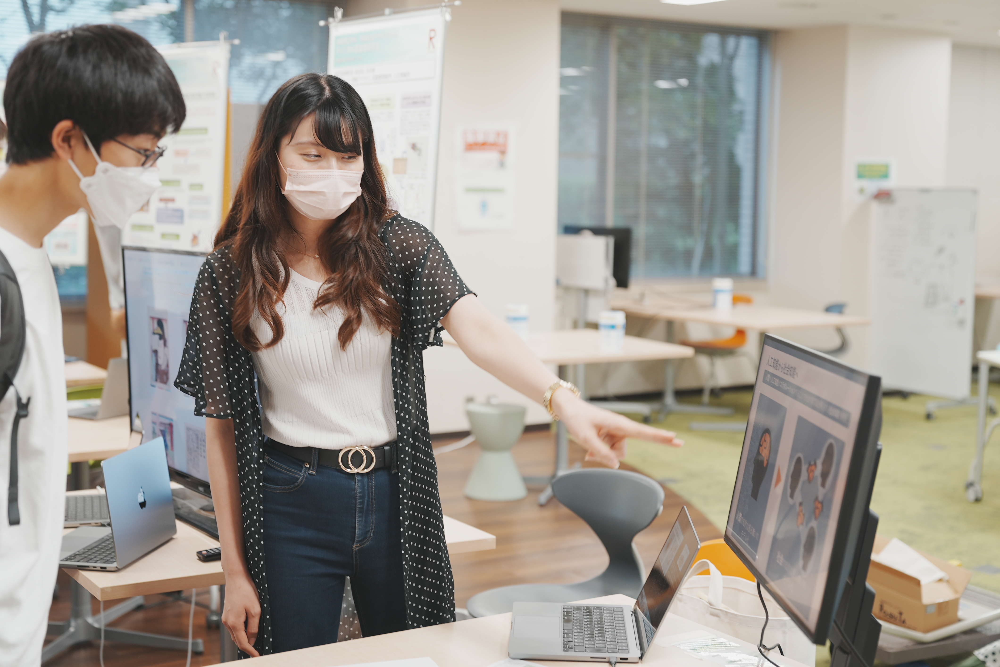

Laboratory Life
先端社会デザインコースの1回生向けコース説明会が行われました．

概要
6/24,28に先端社会デザインコースの1回生向けコース説明会で，研究紹介や研究室の学生による相談会を行いました． 遅い時間にも関わらず，2日間ともたくさんの1回生が参加してくれました． 研究紹介では，研究室で運営する多言語チャットツール「Langrid chat」を用いてアンペア先生や留学生達と言葉当てゲームを行い，実際に多言語コミュニケーションを体験してもらいました． ゲームに参加した学生たちは言語差や文化差を感じる！と言いながら楽しんでいる様子でした．これをきっかけに少しでも異文化コラボレーションに興味をもってもらえていれば嬉しいですね！

